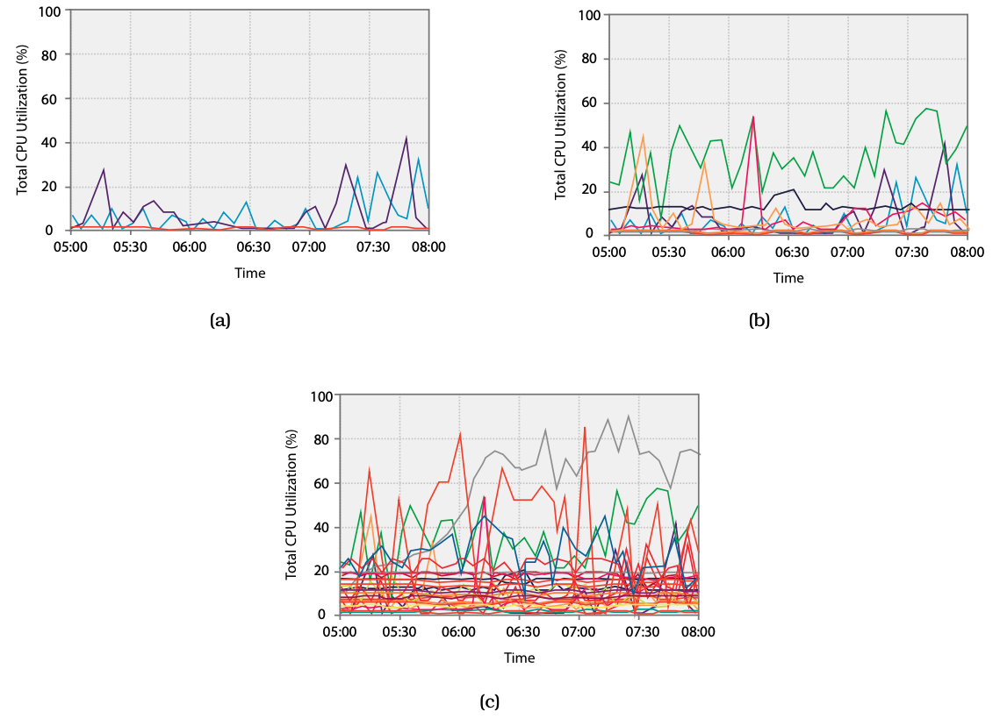
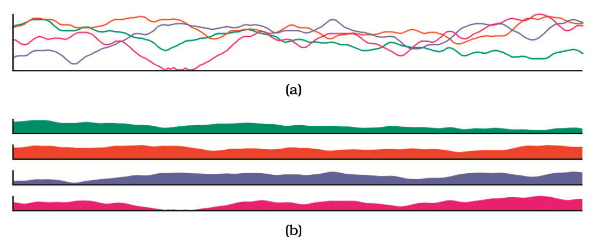
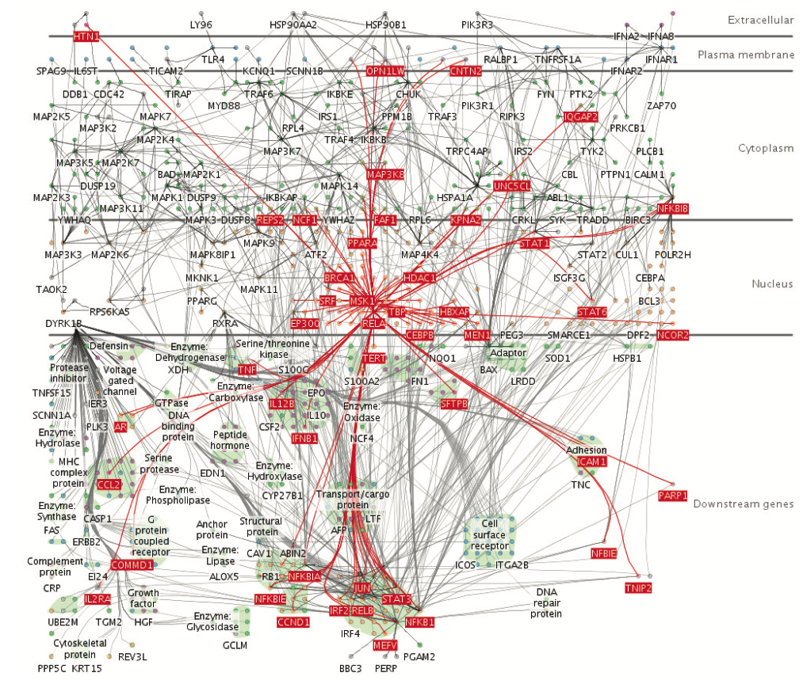

Superposición de capas
Facet
IIC2026
Superposición de capas
Generar y colocar capas una sobre la otra para producir una sola vista.
Gráficos de línea múltiples

(Fuente: Libro "Visualization, Analysis and Design" )
Gráficos de línea múltiples versus pequeños múltiples de área

(Fuente: Libro "Visualization, Analysis and Design" )
Capas estáticas y dinámicas

(Fuente: Libro "Visualization, Analysis and Design" )
Superposición de capas
Facet
IIC2026
¡Deja tus preguntas en los comentarios!